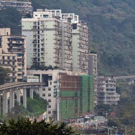
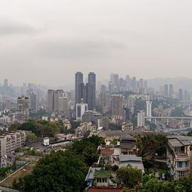
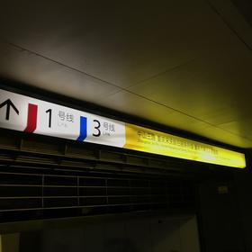
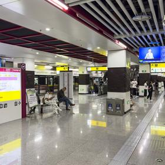
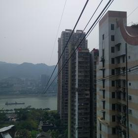
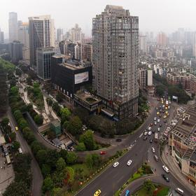

08:00🏨 อาหารเช้า45 น.
กินเบา ๆ วันนี้เดินเยอะและขึ้นลงหลายระดับ
🚇 รถไฟฟ้าสาย 2 ไปหลี่จื่อป้า·4 กม.·15 น.

09:00🏔️ Liziba รถไฟทะลุตึก1 ชม.
รถไฟฟ้าสาย 2 วิ่งทะลุกลางอาคารที่พักอาศัย 19 ชั้น โดยสถานีอยู่ชั้น 6–8 ของตึก มีจุดชมฝั่งตรงข้ามสร้างไว้ให้ถ่ายโดยเฉพาะ ขบวนมาทุก 3–5 นาที เข้าฟรี · ถ่ายได้ทั้งจากจุดชมและจากในขบวน
📸 จุดถ่ายรูป: จุดชมฝั่งตรงข้ามตอนขบวนกำลังเข้าตึกพอดี รอ 3–5 นาทีได้ขบวนใหม่
🚶 เดินขึ้นเนินเอ๋อหลิง·1.2 กม.·20 น.

10:15🏔️ Erchang ย่านโรงงานเก่า2 ชม.
โรงพิมพ์ธนบัตรเก่าสมัยสงครามบนเนินเอ๋อหลิง ปรับเป็นคาเฟ่ ร้านของดีไซน์ และสตรีตอาร์ต ดาดฟ้ามองเห็นแม่น้ำแยงซีกับเมืองทั้งฝั่ง เข้าฟรี · จุดที่คนในคลิปใช้เวลานานที่สุด
📸 จุดถ่ายรูป: ดาดฟ้า Erchang มองเห็นแม่น้ำแยงซีกับเมืองทั้งฝั่ง
🚶 เดินในย่านเดียวกัน·5 น.
12:30🍽️ กลางวันที่ Erchang1 ชม.
ร้านในย่านเดียวกัน มีทั้งอาหารจีนและคาเฟ่ตะวันตก
🚶 เดินลงไปสถานี Lianglukou·0.9 กม.·15 น.

13:45🏔️ บันไดเลื่อนยักษ์ Crown45 น.
บันไดเลื่อนกลางแจ้งยาว 112 เมตร ชัน 30 องศา นั่งขึ้นลง 2 นาทีครึ่ง เชื่อมสถานี Lianglukou กับพื้นเมืองที่ต่างระดับกัน 50 เมตร ค่าโดยสาร ¥2 ยาวเป็นอันดับต้นของเอเชีย
📸 จุดถ่ายรูป: ถ่ายจากปลายบันไดเลื่อนให้เห็นความชัน 30 องศาตลอดแนว 112 เมตร
🚇 รถไฟฟ้าสาย 1 ต่อสาย 9·3 กม.·20 น.

14:45🏔️ สถานี Hongyancun ลึก 116 เมตร1 ชม.
สถานีรถไฟใต้ดินที่ลึกที่สุดในโลก ชานชาลาอยู่ใต้ผิวดิน 116 เมตร · ทางออก 4 ลงบันไดเลื่อน 7 ช่วงติดกันใช้เวลา 8 นาที ทางออก 2 เป็นทางเลื่อน 105 เมตร 6 นาที · ระดับระหว่างทางออก 2 กับ 4 ต่างกัน 141 เมตร · สาย 9 และ 5 เสียแค่ค่าโดยสาร
📸 จุดถ่ายรูป: บันไดเลื่อน 7 ช่วงเรียงต่อกันลงไปในความลึก 116 เมตร
🚇 รถไฟฟ้าลงทางออก 5B สถานี Xiaoshizi·2 กม.·15 น.

16:15🏔️ กระเช้าข้ามแม่น้ำแยงซี1 ชม. 15 น.
กระเช้าข้ามแม่น้ำยาว 1,166 เมตร สูงเหนือน้ำ 70 เมตร เปิดใช้ตั้งแต่ปี 1987 เดิมเป็นขนส่งมวลชนจริง ซื้อเที่ยวเดียว ¥30 พอ อย่าซื้อไป-กลับ ¥50 เพราะขากลับต้องไปรับบัตรคิวใหม่อีกรอบ · ขึ้นฝั่ง Yuzhong ที่ถนน Xinhua ติดทางออก 5B สถานี Xiaoshizi · ไม่มีช่องลัดคิวอย่างเป็นทางการ ใครเสนอขาย skip-the-line คือมิจฉาชีพ
📸 จุดถ่ายรูป: จากในกระเช้าตอนลอยอยู่กลางแม่น้ำ เห็นตึกสูงสองฝั่งพร้อมกัน
🚡 กระเช้าข้ามแม่น้ำ แล้ว 🚕 ต่อรถ·1.2 + 3 กม.·5 น. + 12 น.

17:40🏔️ Super 80 Street ฝั่ง Nan'an1 ชม. 30 น.
ถนนจำลองฉงชิ่งยุค 1980 ทั้งเส้น มีฉากรถไฟ ร้านชำ ป้ายโฆษณาเก่า และข้าวของยุคนั้น เข้าฟรี เปิด 09:00–22:00 · อยู่ที่ถนน Nanping New Street เลขที่ 92 ลงกระเช้าแล้วต่อรถสั้น ๆ
🚶 เดินในย่าน Nanping·0.4 กม.·7 น.
19:30🍽️ มื้อเย็นฝั่ง Nan'an1 ชม. 30 น.
ย่าน Nanping มีร้านเยอะและคนท้องถิ่นมากกว่าฝั่งเจี่ยฟ่างเปย ราคาถูกกว่าด้วย